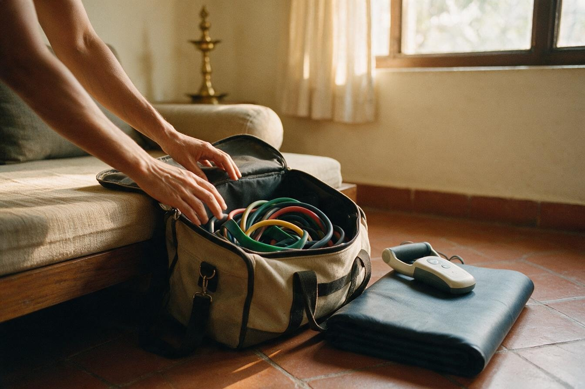

Home visit physiotherapy
Professional physiotherapy
at your home.
For people who cannot easily travel to a clinic — older adults, patients recovering from surgery or stroke, and families who need guidance on safe assistance at home.

Who it suits
Rehabilitation where the difficulty actually happens.
A clinic can assess a knee. Only your home can show us the stairs, the bathroom door, the height of your bed. That is the argument for a home visit.
Older adults
Where travelling is tiring, painful or requires someone to accompany them.
Post-operative patients
The first weeks after joint replacement or fracture surgery, when travel is difficult.
Stroke rehabilitation
Where the home environment and caregiver involvement are central to progress.
Mobility limitations
When leaving the house is a significant undertaking rather than a short trip.
Caregiver-supported care
When family members need to learn safe assistance techniques.
Home safety concerns
When stairs, bathroom access or falls risk need assessing in place.
How a home visit works
It follows the same clinical logic as a clinic appointment, adapted to your space.
- Conversation. History, current difficulties, medications, and what you want to get back to doing.
- Examination. Movement, strength and function — using your own chair, bed and stairs where relevant.
- Environment review. Stairs, bathroom access, lighting, flooring and any trip hazards.
- Plan and teaching. A short programme, demonstrated and practised with you, and with a family member if you wish.
- Review. A clear point at which we check progress and adjust.
What to prepare
- A clear space roughly the size of a yoga mat
- Good lighting, and a firm chair with arms
- Any walking aid, brace or equipment you already use
- Recent reports or prescriptions, if you have them
- A family member present, if you would like support
- Pets settled in another room
Safety at home
Home rehabilitation is safe when it is set up properly. We check that the working area is clear, the lighting is adequate and support is within reach before any standing exercise begins. If a task is not safe to practise at home yet, we will say so and work on the components first.
Request a visit
Tell us about the patient and the location.
We will confirm coverage and a time by phone. This is a request, not a confirmed booking.
Questions
Home visit FAQs
Home visits are offered in Shirur and the immediately surrounding areas. Because we do not want to promise coverage we cannot keep, please call or message with your exact location and we will confirm honestly whether we can reach you.
Similar to a clinic appointment — usually around 45 minutes for a first assessment, including time to look at your home environment and involve family members if appropriate.
A clear space about the size of a yoga mat, good lighting, and a firm chair with arms. That is usually enough. If you have a walking aid, keep it nearby.
Home visits carry a travel component, so they are priced differently from clinic appointments. Please call for current charges — we will tell you clearly before you commit.
Yes, with the patient's consent, and it is often valuable. Caregivers can learn safe assistance techniques and how to supervise exercises between visits.
Home visits are particularly useful in the first weeks after joint replacement or other surgery, when travel is difficult. We work within your surgeon's protocol and any movement restrictions.